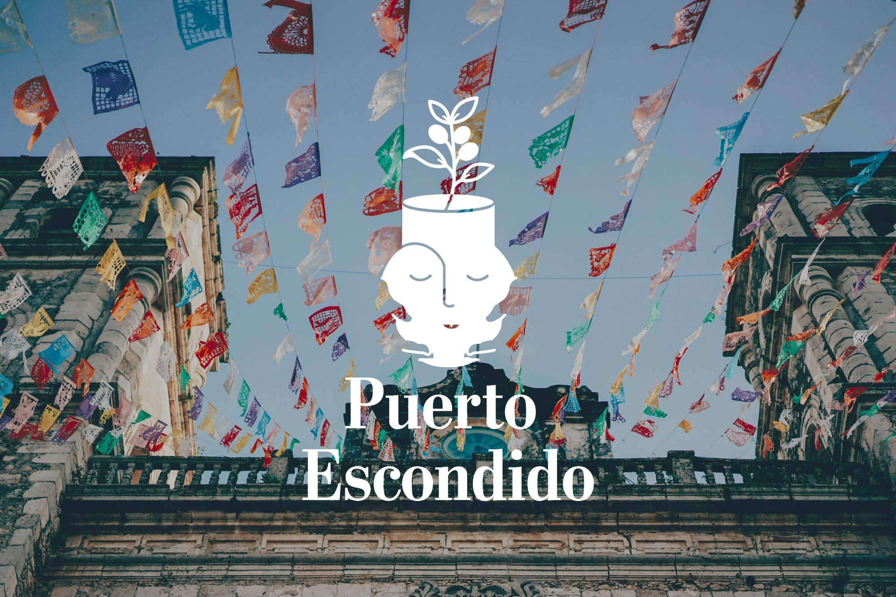
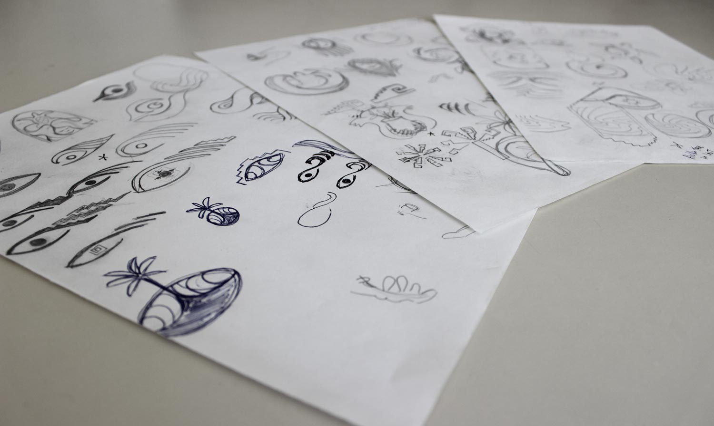
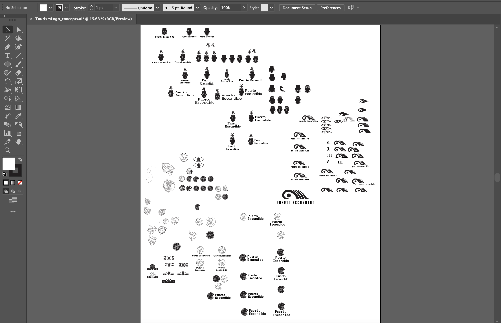
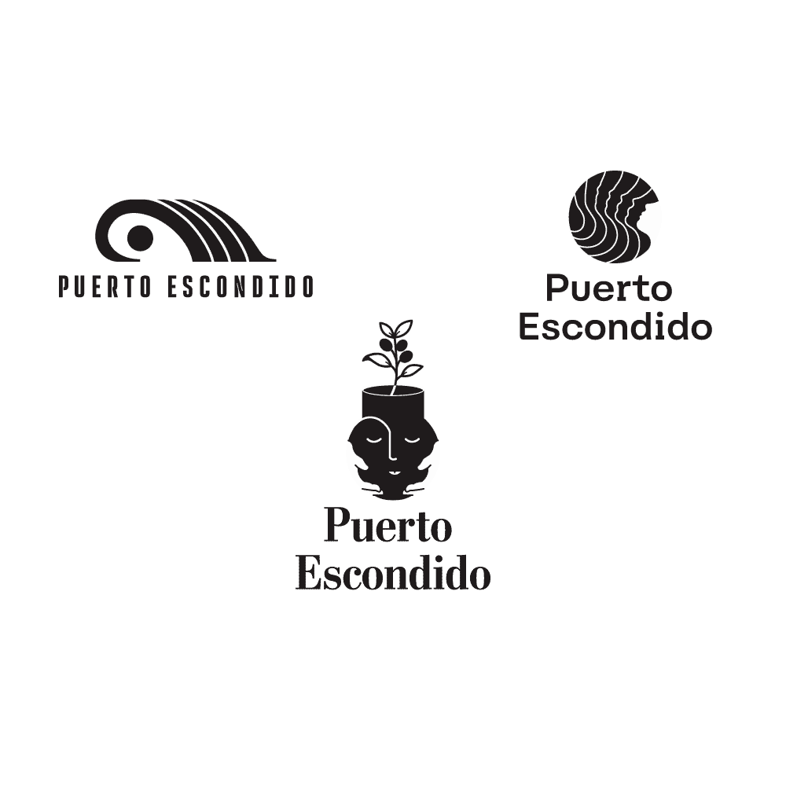
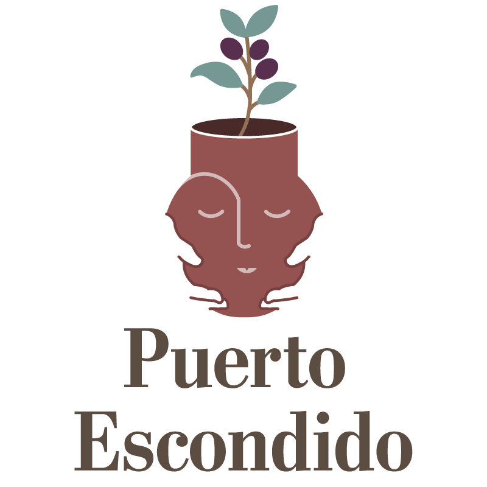

- 🖥 Illustrator
- 🖥 Photoshop
- 🖊 Sketching

Tourism Logo Revival
The Challenge
The challenge for this project was to capture the complexities and nuances of the city while simplifying its essence to create a logo that resonates with the local people as well as extendeds a warm welcome to visitors.
The Solution
Through the creative process I was able to extract key characteristics that speak to the city's heritage and greet visitors with the friendly spirit of its local people.
Research & Sketching
Throughout my research I identified important themes that I wanted to explore. I looked into the history behind the city and how it emerged as a touristic hotspot. I explored the culture, examining arts, textiles, ceramics, folklore and geographical importance. The story of a quaint fishing village that gained prominence as a shipping port particularly captured my attention, as did the folklore surrounding the town's name. These themes, along with others, allowed me to immerse myself in the important heritage of the town.
Focusing my research on key themes was crucial to guiding my sketching process. From there, I experimented with different logo styles and explored various directions that could express these themes until I settled on three concepts that were strong enough to move forward with.

Digitizing
The next step was to refine these concepts through Illustrator, where I enjoyed the challenge of translating my sketches into vector design. Here I was also able to experiment pairing type with each concept in order to bring the combination mark together.

Iterations

Option 1: Mexican Pipeline
Among the warm water and picturesque beaches, there is an infamouse surf break that gathers surfers from around the world. The iconic wave has transformed this quiet fishing village into a thriving beach town, hosting millions of visitors annually. Drawing inspiration from traditional Oaxacan patterns, the wave signifies the city's connection to the ocean.
Option 2: Bienvenido "Welcome"
This concept was inspired by traditional Oaxacan ceramics. The use of red clay spans centuries and is a beautiful aspect of Mexican culture. The pot is seen as a gift, welcoming visitors to a culturally rich land. The face on the pot is kind and warm but should be received with respect. There is a coffee plant extending from the top of the pot, honoring the port's history, when coffee was shipped from the harbor.
Option 3: La Escondida "The Hidden One"
This concept was inspired by the tale of a young indigenious woman who was kidnapped by spanish pirates. While anchored in the bay, she managed to escape one night and swim ashore, hiding in the jungle as they searched for her. She was never found and they gave her the name "la escondida", the hidden one, which soon evolved into the name of the town. I wanted to show an abstract view of swell filling into the bay that slowly transitions to a woman's face, implying a hidden woman.
The Final
For the final design, I chose to go with the traditional red clay pottery. It resonated effectively with the target audience, while beautifully capturing the town's rich heritage and culture. I paired the welcoming mark with a slab serif to convey strength and confidence, reflecting the character of Puerto Escondido's people—a delicate blend of pride and hospitality.
